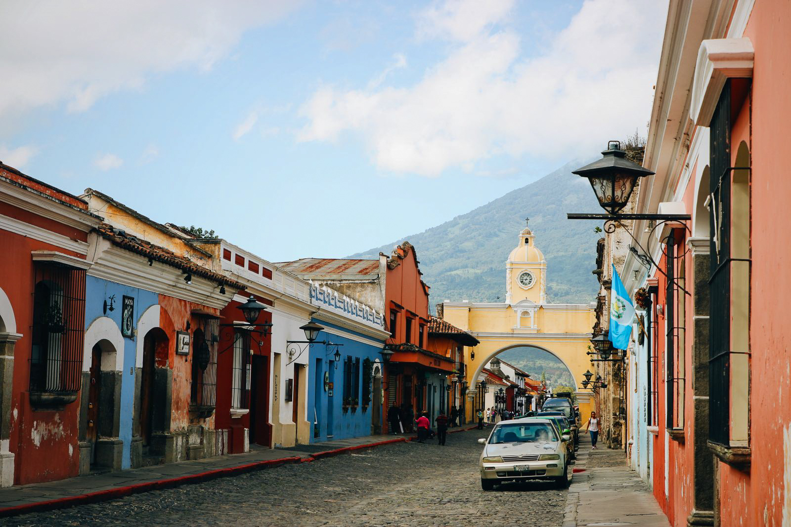

voici quelque photo de mes voyages

Les Expl rateurs
rateurs
Ma passion à moi ? Vous l’avez sans doute déjà deviné…les VOYAGES ! Explorer le monde, découvrir ses richesses, faire de belles rencontres… Je suis parti me balader dans les souks à Marrakech, me suis émerveillée au dessus de la Cappadoce depuis un survol en montgolfière, me suis perdue dans le dédale des ruelles pavées de Santorin, j’ai nagé avec les dauphins dans la mer des Caraïbes, j’ai vécu « l’American Dream » en sillonnant les routes de l’ouest américain en mustang décapotable, me suis retrouvée face à face avec un orignal dans une forêt au Canada, j’ai observé un magnifique coucher de soleil sur la baie de San Francisco et le Golden Gate Bridge… Quelque soit le coin du monde où je me rends, c’est toujours pour moi un grand bonheur !

Bienvenue sur mon blog voyage. Moi c'est Carole. Il y a 27 ans je suis partie seule passer un an en Australie. C'est ce premier voyage m'a donné le goût de l'aventure. Après plusieurs séjours en Asie, en 2010 j'ai pris une année sabbatique et je suis partie voyager seule autour du monde, un voyage d'un an qui a changé ma vie. Je vous raconte mes escapades ici et ailleurs en vous délivrant de nombreux conseils aux

Bienvenue sur mon blog voyage. Moi c'est Emmanuel. Il y a 27 ans je suis parti seul passer un an en Australie. C'est ce premier voyage m'a donné le goût de l'aventure. Après plusieurs séjours en Asie, en 2010 j'ai pris une année sabbatique et je suis partie voyager seule autour du monde, un voyage d'un an qui a changé ma vie. Je vous raconte mes escapades ici et ailleurs en vous délivrant de nombreux conseils aux voyageurs. Je vous souhaite un bon voyage virtuel dans ces colonnes !


Comme mon blog l’indique n’est-ce-pas…, je m’appelle mathieu. vingtenaire blogueuse et journaliste, j’ai changé de vie pour voyager la majeure partie de l’année et vous faire partager ma passion. Entre deux aventures, je pose mes valises à Marignane.Ma vie a complètement changé en 2008. Après une rupture sentimentale, je décide de partir un mois toute seule sac-à-dos au japon et reunion. C’est la première fois de ma vie que je voyage ainsi, sans rien d’autre prévu que mon billet d’avion aller-retour. Je ne savais pas trop à quoi m’attendre…Ce fût une révélation. Quand on se retrouve seul à l’autre bout du monde, on est obligé de puiser dans ses propres ressources car on n’a personne d’autre sur qui compter. Et c’est là qu’on réalise qu’on est beaucoup plus fort que ce qu’on imaginait. Un voyage riche de rencontres incroyables.qui voyagent seules, pendant de longs Certnes font même le tour du monde! Un soir je tombe par hasard sur une certaine Emily. A la recherche d’une chambre d’hôtel toutes les deux, nous ferons route ensemble à travers tout le pays (et beaucoup plus depuis!) Je change mon billet d’avion retour pour pouvoir rester un mois de plus en Thaïlande. Désespérée de devoir finalement rentrer en France car le travail m’appelle, je n’ai alors plus qu’une idée en tête: partir moi aussi faire le tour du monde…
Le Japon est un pays insulaire situé dans l'océan Pacifique. Il comporte des villes denses, des palais impériaux, des parcs nationaux montagneux ainsi que des milliers de temples et de sanctuaires.

L'île de la Réunion est un département français de l'océan Indien. Elle est réputée pour son intérieur volcanique recouvert de forêt tropicale, ses récifs de corail et ses plages. Son site le plus emblématique est le piton de la Fournaise, un volcan actif qui peut être gravi et s'élève à 2 632 m.